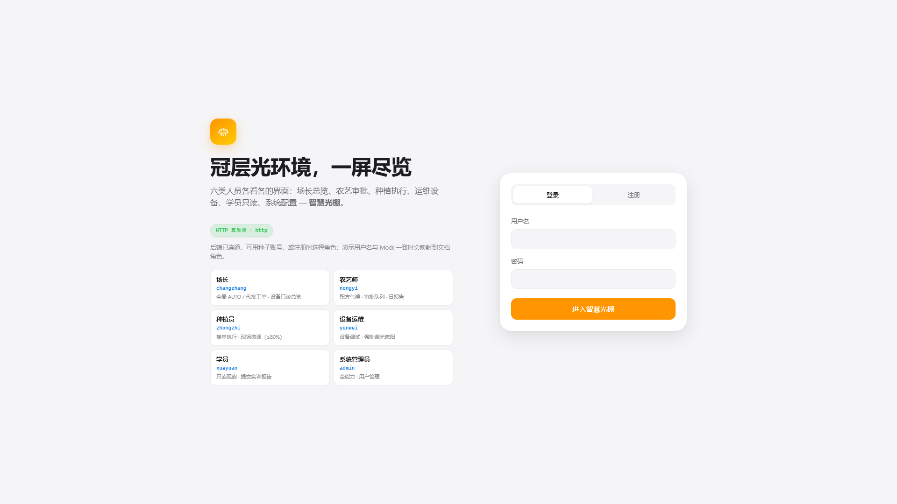
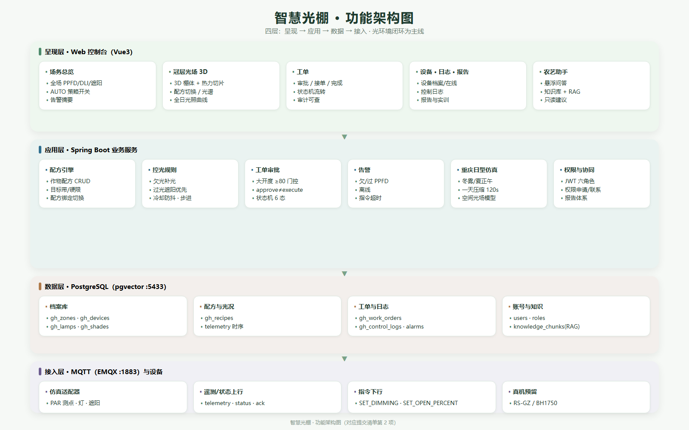
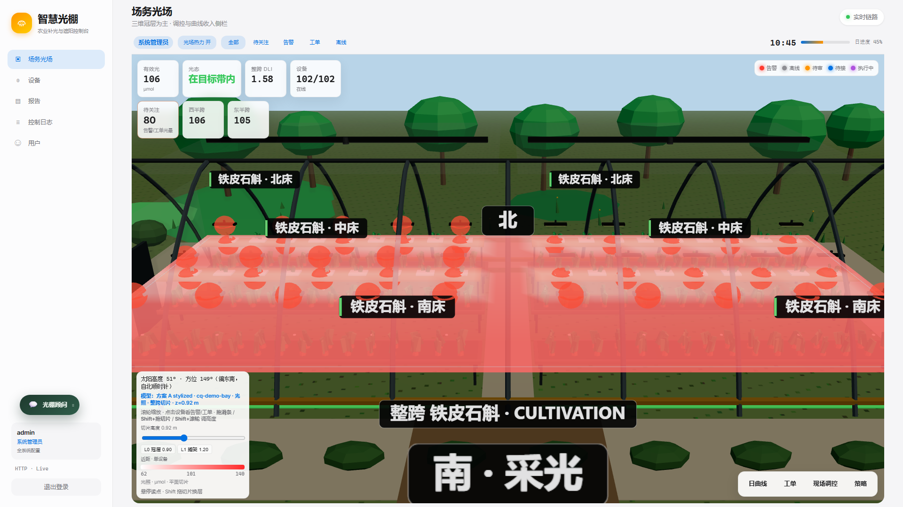
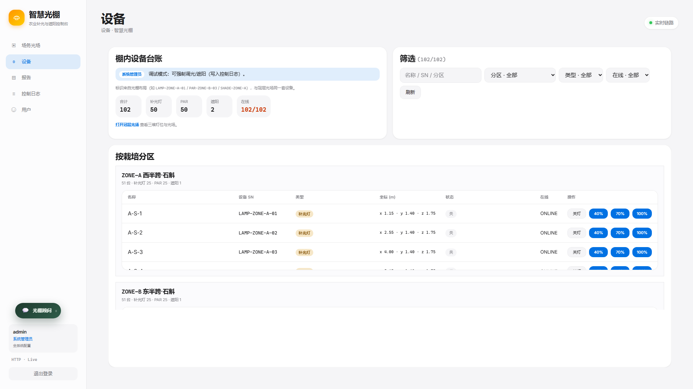
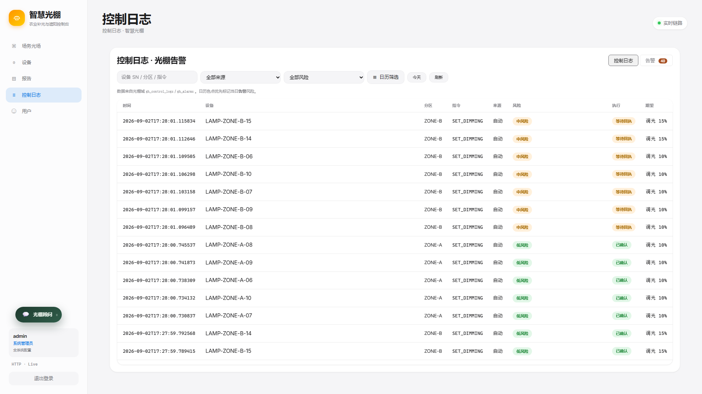
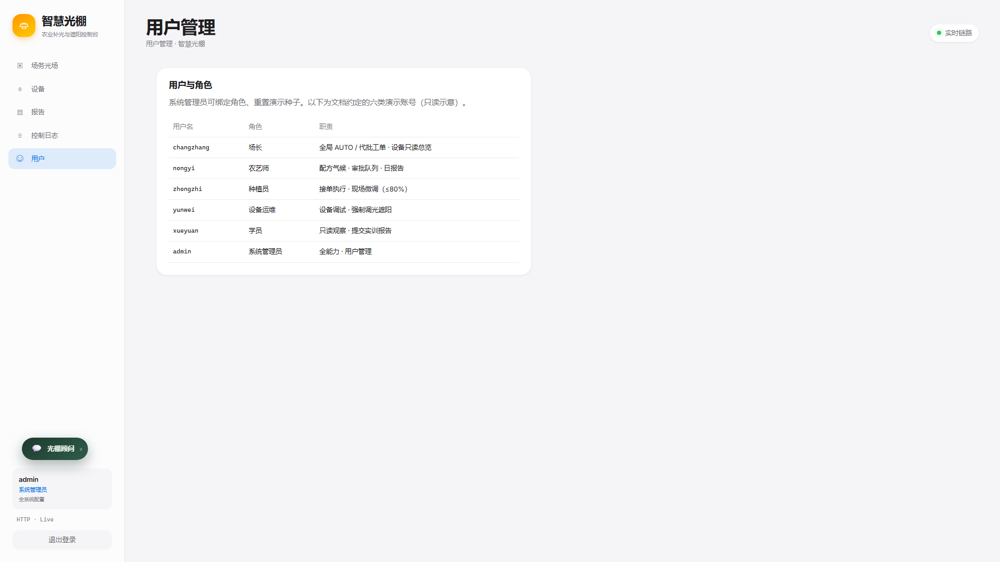
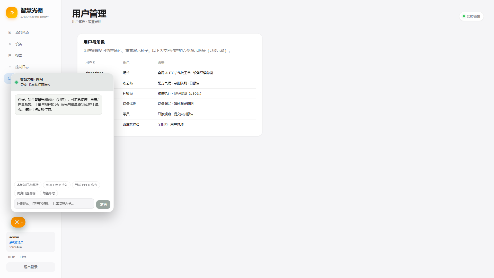

- 痛点：寡照欠光 + 经验调光
- 目标：冠层有效光闭环
- 闭环：测光 → 比对 → 调控
- 安全：大开度走工单审批
- 交付：源码 / 发布包 / 文档

DEFENSE · IOT
设施农业光环境闭环管控平台
感知 → 传输 → 平台 → 应用 → 执行
测光 · 比对 · 调控 · 审批 · 可追溯
01 · 场景与目标

02 · 总体架构

端侧灯/PAR/遮阳（仿真+可选 BearPi）· MQTT/EMQX · Spring Boot + PostgreSQL · 前端控台 · Agent 仅应用层
03 · 闭环演示

卖点：有效光 / 光态 / DLI / 在线设备一眼可见；弱机可关「光场热力」
04 · 设备与执行

05 · 权责可追溯


06 · 应用层加分

07 · 交付与答辩要点